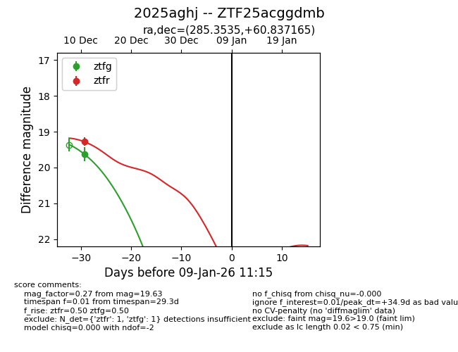
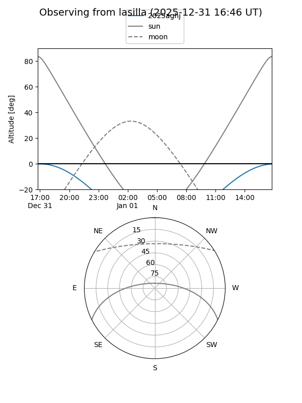
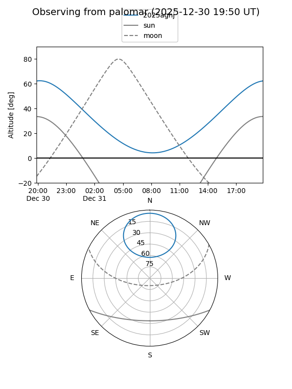

2025aghj
Target 2025aghj at 2025-12-18 11:17
Aliases and brokers:
FINK: fink-portal.org/ZTF25acggdmb
Lasair: lasair-ztf.lsst.ac.uk/objects/ZTF25acggdmb
ALeRCE: alerce.online/object/ZTF25acggdmb
TNS: wis-tns.org/object/2025aghj
YSE: ziggy.ucolick.org/yse/transient_detail/2025aghj
alt names
ZTF25acggdmb (ztf,fink_ztf)
2025aghj (tns,yse)
Coordinates:
equatorial (ra, dec) = 285.3535,+60.83716
equatorial (HMS+DMS) = 19:01:24.84,+60:50:13.79
galactic (l, b) = (91.1861,+22.29099)
Photometry
last ztfg=19.63, ztfr=19.28
1 ztfg, 1 ztfr detections
Lightcurve

Visibility


Additional plots